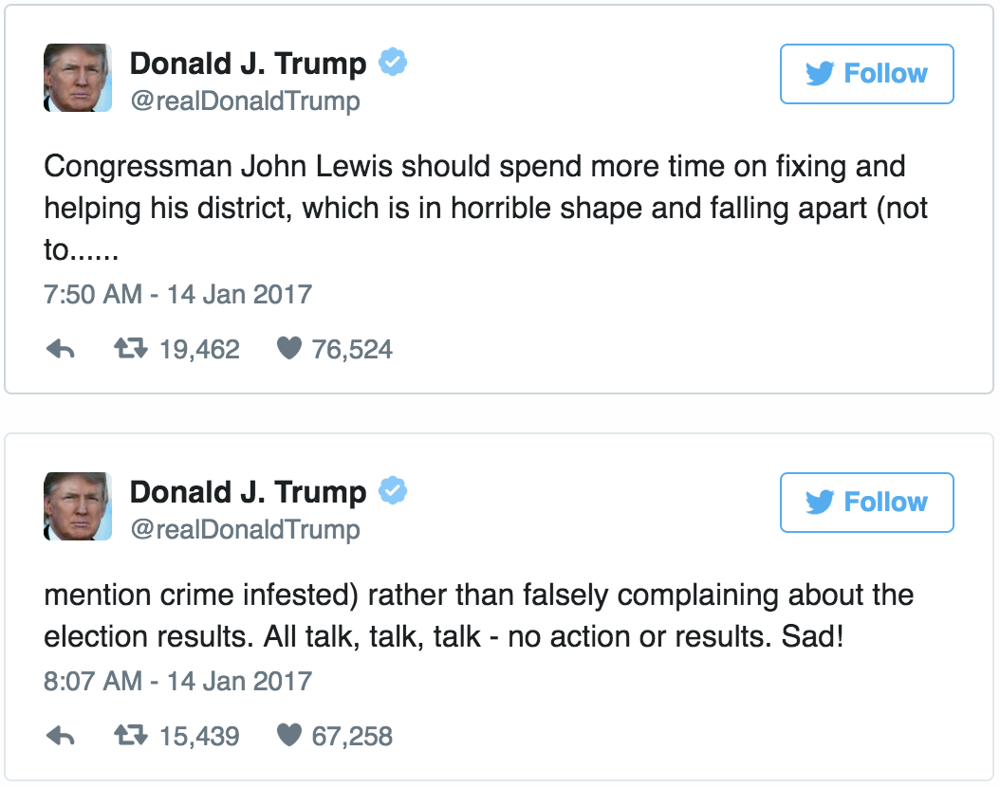
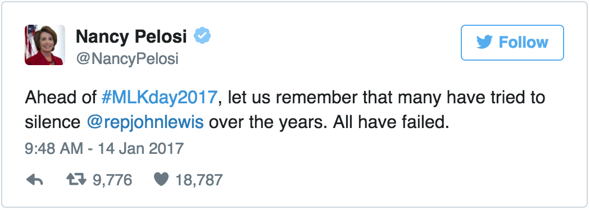

Trump rips 'all talk,' 'no action' civil rights icon Lewis
President-elect Donald Trump harshly responded to civil rights icon and Georgia Rep. John Lewis on Saturday, calling him "all talk" and "no action" after Lewis said Trump was not a "legitimate" president.
"Congressman John Lewis should spend more time on fixing and helping his district, which is in horrible shape and falling apart (not to mention crime infested) rather than falsely complaining about the election results. All talk, talk, talk - no action or results. Sad," Trump tweeted Saturday, which happened to fall on the weekend of the Martin Luther King Jr. federal holiday.
Trump later doubled down on his criticism -- though he did not take aim at Lewis' district -- tweeting Saturday night: "Congressman John Lewis should finally focus on the burning and crime infested inner-cities of the U.S. I can use all the help I can get!"
Lewis -- an ally of King who was brutally beaten by police in Selma, Alabama, in 1965 while marching for civil rights -- represents a Georgia district that includes most of Atlanta. On the campaign trail, Trump regularly decried crime in urban areas while pledging to revitalize neighborhoods primarily populated by black Americans.
A Hillary Clinton supporter, Lewis criticized Trump's ascension to head of state due to Russia's alleged meddling in the 2016 election.
"I don't see this President-elect as a legitimate president," the long-serving Democrat told NBC News' Chuck Todd in a clip released Friday.
It was an astonishing rebuke by a sitting member of Congress toward an incoming President. Trump, however, largely launched his political career by calling into question the legitimacy of President Barack Obama's presidency by repeatedly suggesting he wasn't born in the United States.
Cornell William Brooks, the president of the NAACP, said Trump's remarks were disrespectful and called on him to apologize.
"By disrespecting @repjohnlewis, @realDonaldTrump dishonored Lewis' sacrifice & demeaned Americans & the rights, he nearly died 4. Apologize," Brooks tweeted, including an image of a bloodied Lewis taken during the Civil Rights Era.
Donna Brazile, the interim head of the Democratic National Committee, denounced Trump's remarks and said at a DNC gathering in Phoenix that Lewis "took action."
"He took action from marching from Selma to Montgomery. He took action in marching toward men wielding clubs across the Pettus Bridge. They fractured his skull because of the color of his skin. But John Lewis never stopped marching for justice and equality for all people," she said.
Meanwhile, Democratic members of Congress, highlighting Lewis' contributions to the civil rights movement, swiftly condemned Trump.
"Ahead of #MLKday2017, let us remember that many have tried to silence @repjohnlewis over the years. All have failed," tweeted House Minority Leader Nancy Pelosi.
